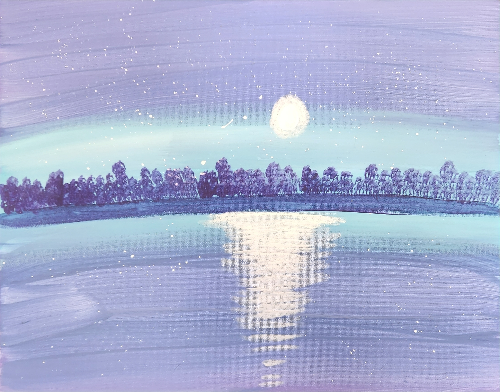
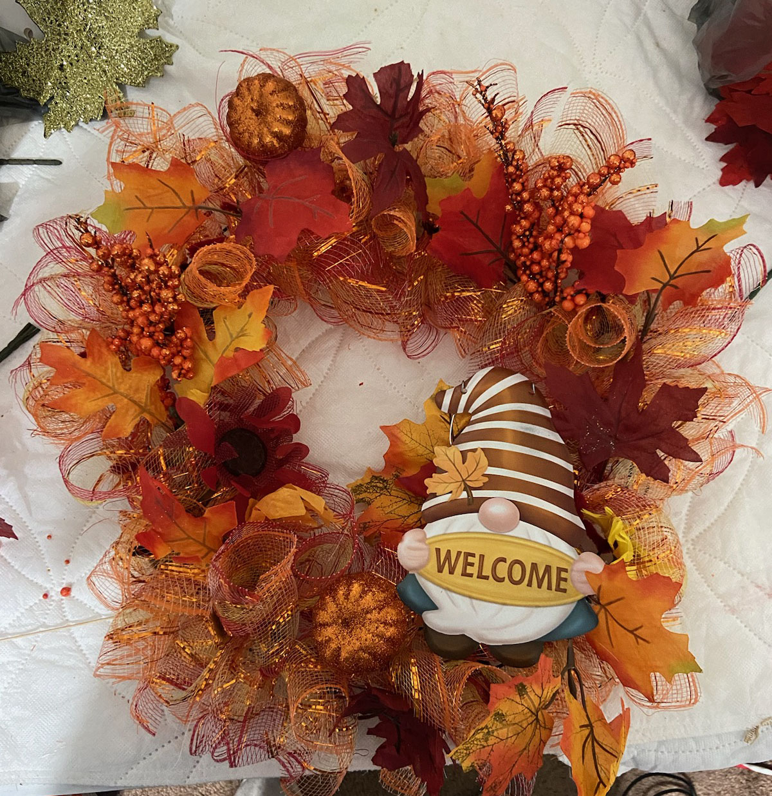
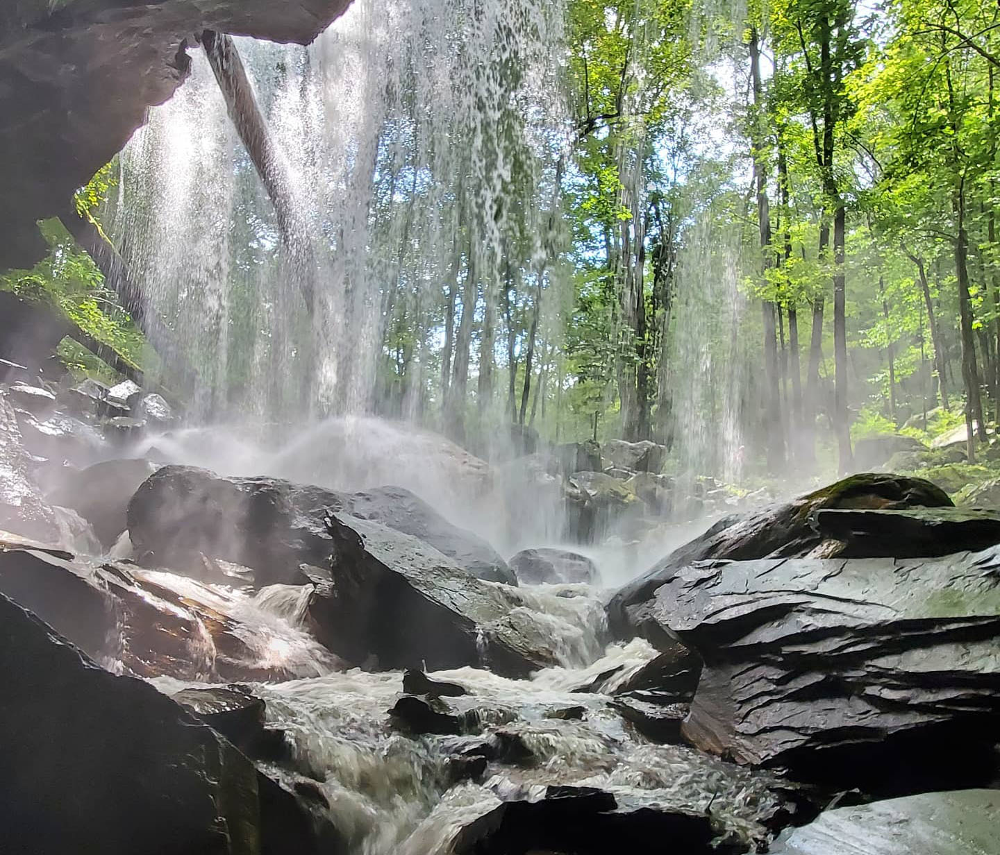
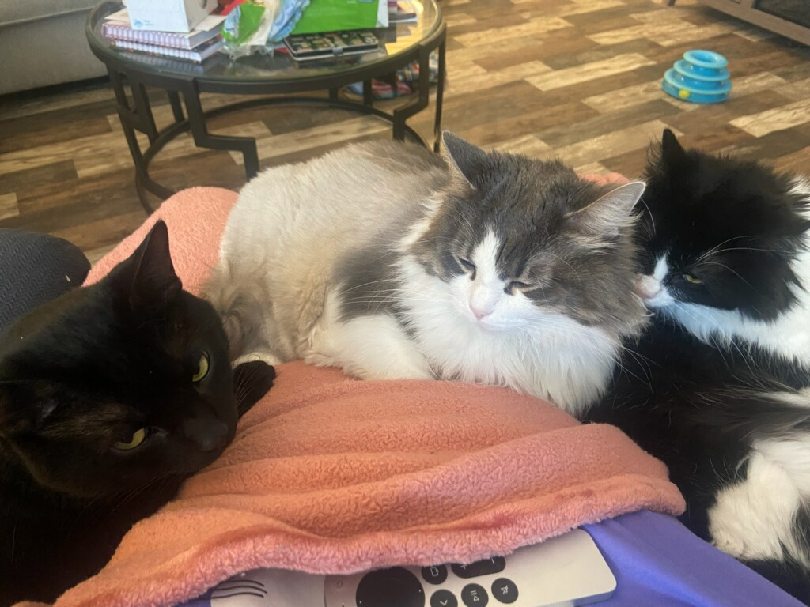

My Hobbies
When I'm not immersed in the compelling narratives of my best books, you can usually find me relaxing in front of the TV, watching the newest series that are worth binging on, or reading classic works of literature. But, I use my downtime for more than just mindless amusement—it's a chance for intense competition and priceless time spent with my boyfriend, Jonathan. Laughter and friendship infuse every moment, whether we're playing chaotic games of UNO or checkers, with me always winning, or going on unplanned adventures.
And I joyfully answer to the draw of the big outdoors. Absorb in the peace and quiet of nature after leaving behind everyday life has a truly enchanted quality. Every adventure serves as a reminder of the peace and beauty that surrounds us, whether it be a quiet stroll along a beautiful trail or a challenging hike that pushes the limits of discovery.
Recently, I've discovered the joy of painting, and it's become an unexpectedly fulfilling passion in my life. There's something incredibly therapeutic about putting brush to canvas and allowing my creativity to flow freely. Whether I'm experimenting with bold strokes and vibrant colors or delving into more subtle, nuanced compositions, each painting becomes a reflection of my emotions and experiences. It's a process of self-expression that brings me immense satisfaction and allows me to explore new dimensions of creativity.
Life, for me, is all about finding the ideal balance between following my hobbies and opening myself up to new experiences. Every moment is a chance to appreciate life's riches and make priceless memories, whether I'm engaged in a compelling book, having fun over a board game, or exploring the outdoors.
Reading

Painting
Crafts
Hiking
Relaxing
Kole (left), Silvie (center), Evie (right)